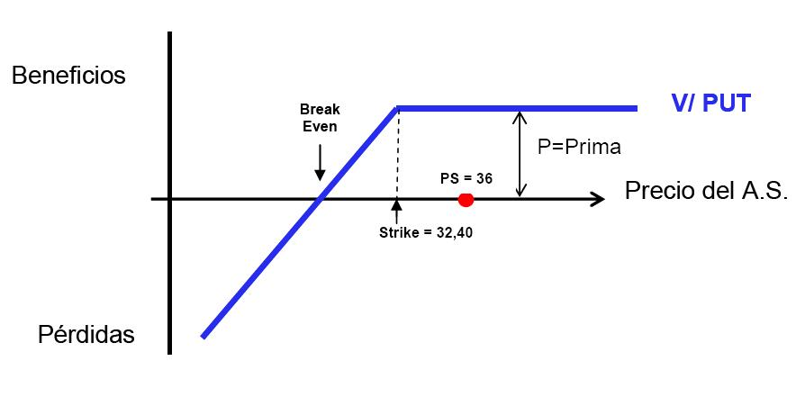
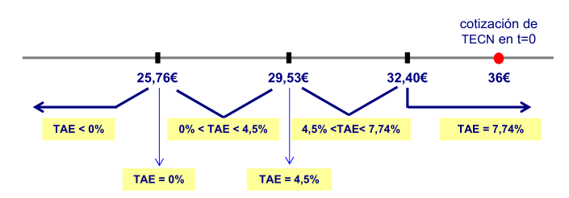
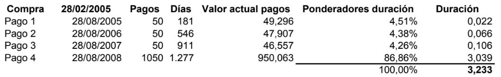

Casos prácticos 2018
Performance de fondos (II)
Considera la siguiente información:
| Fondo | Rentabilidad Acumulada a 3 años | Beta | Volatilidad |
|---|---|---|---|
| Fondo de Renta Variable ABC | 53,40% | 0,96 | 14,32% |
| Índice de Renta Variable | 46,91% | 1 | 12,89% |
| Fondo de Renta Fija XYZ | 27,87% | 1,10 | 8,84% |
| Índice de Renta Fija | 24,33% | 1 | 5,72% |
El coeficiente de correlación entre las rentabilidades del Fondo de Renta Variable ABC y del Fondo de Renta Fija XYZ es 0,21.
Formamos una cartera P con el 70% Fondo de Renta Variable ABC y el 30% Fondo de Renta Fija XYZ.
SE PIDE:
Calcular el alfa de los Fondos ABC y XYZ.
Calcular el Tracking Error y el Ratio de Información de los 2 fondos.
Calcular la volatilidad de la cartera P.
Apartado a
- En este caso nos proporcionan las rentabilidades acumuladas a 3 años, luego lo primero que hacemos es convertir estas rentabilidades en rentabilidades anuales. Para ello nos planteamos la siguiente equivalencia financiera de tantos,
\[\left(1+i\right)^3=\left(1+i_{trianual}\right)\]
- de donde despejamos el tipo efectivo anual \(i\),
\[i=\left(1+i_{trianual}\right)^{(1/3)}-1\]
- si susutituimos y calculamos en la expresión anterior obtendremos las rentabilidades anuales,
\[i_{ABC}=\left(1+0,5340\right)^{(1/3)}-1=0,153229(15,33\%)\] \[i_{I_{RV}}=\left(1+0,4691\right)^{(1/3)}-1=0,13679(13,68\%)\]
\[i_{XYZ}=\left(1+0,2787\right)^{(1/3)}-1=0,08539(8,54\%)\]
\[i_{I_{RF}}=\left(1+0,2433\right)^{(1/3)}-1=0,07528(7,53\%)\]
- Ahora podemos calcular el alfa de estos fondos como,
- Alpha de Jensen
\[\alpha_F=R_f-\beta_F\cdot R_{I}\]
Donde,
\(\alpha_p\), es el alpha de Jensen del fondo \(F\).
\(R_f\), es la rentabilidad del activo sin riego.
\(\beta_F\), es la beta (sensibilidad a los movimientos del mercado) del fondo \(F\).
\(R_I\), es la rentabilidad esperada del índice \(I\).
- Luego tenemos que para el Fondo ABC:
\[\alpha_{ABC}=R_{f_{ABC}}-\beta_{ABC}\cdot R_{I_{RV}}\] \[\alpha_{ABC}=15,33-0,96\cdot 13,68=2,1972\%\]
- y, para el Fondo XYZ:
\[\alpha_{XYZ}=R_{f_{XYZ}}-\beta_{XYZ}\cdot R_{I_{RF}}\] \[\alpha_{XYZ}=8,54-1,10\cdot 7,53=0,257\%\]
Apartado b
- En este apartado primero nos piden calcular el Tracking Error,
- Tracking Error (o error de tracking)
\[TE=\sigma_{\alpha,F}=\sqrt{\sigma_p^2-\beta_p^2\cdot \sigma_F^2}\]
Donde,
\(\sigma_{\alpha,F}\), es la desviación típica (volatilidad o riesgo) del alpha de Jensen respecto de la fondo \(F\).
\(\sigma_p^2\), es la varianza del fondo \(F\) .
\(\beta_p^2\), es la beta al cuadrado del fondo \(F\).
\(\sigma_I\), es la varianza al cuadrado del Índice \(I\) (o benchmark).
- luego, el TE para el fondo ABC será de:
\[TE_{ABC}=\sqrt{14,32^2-0,96^2\cdot 12,89^2}=7,21\%\]
- y, para el fondo XYZ será de:
\[TE_{XYZ}=\sqrt{8,84^2-1,10^2\cdot 5,72^2}=6,21\%\]
- y, en segundo lugar calculamos el Ratio de información:
- Ratio de Información
\[RI=\frac{\alpha_p}{TE}\]
Donde,
\(\alpha_p\), es el alpha de Jensen del fondo \(F\).
\(\sigma_{\alpha,F}\), es la desviación típica (volatilidad o riesgo) del alpha de Jensen respecto del fondo \(F\).
- luego, el RI para el fondo ABC será de:
\[RI_{ABC}=\frac{\alpha_{F_{ABC}}}{TE_{ABC}}=\frac{2,1972}{7,21}=0,30\] * y, el RI para el fondo XYZ será de:
\[RI_{XYZ}=\frac{\alpha_{F_{XYZ}}}{TE_{XYZ}}=\frac{0,257}{6,21}=0,041\]
Apartado c
- En este apartado calculamos la volatilidad de la cartera como:
la volatilidad de la cartera en función del coeficiente de correlación:
\[\sigma_p=\sqrt{w_{1}^2\cdot\sigma_1^2+w_2^2\cdot\sigma_2^2+2\cdot w_1\cdot w_2\cdot\rho_{1,2}\cdot\sigma_{1}\cdot\sigma_{2}}\]
Donde,
\(\sigma_p\), es la volatilidad (riesgo) de la cartera \(p\).
\(w_1\), es la ponderación (o proporción) del activo \(1\) dentro de la cartera \(p\).
\(\sigma_1\), es la varianza del título \(1\).
\(w_2\), es la ponderación (o proporción) del activo \(2\) dentro de la cartera \(p\).
\(\sigma_2\), es la varianza del título \(2\).
\(\rho_{1,2}\), es el coeficiente de correlación entre los activos 1 y 2.
- luego bastará con sustituir los datos en la fórmula anterior,
\[\sigma_p=\sqrt{0,7^2\cdot14,32^2+0,3^2\cdot8,84^2+2\cdot 0,7\cdot 0,3\cdot0,21\cdot14,32\cdot8,84}\]
- y, calcular:
\[\sigma_p=10,89\%\]
Capita Market Line (CML)
Considere un mercado con las siguientes características:
Rentabilidad esperada: 12%
Volatilidad: 15%
Rentabilidad sin riesgo: 2,0%
Si un cliente que considera que el mercado es eficiente, quiere construir una cartera asumiendo una volatilidad del 9%;
¿Cuál es la rentabilidad máxima que podría obtener?
¿Cuál es la ponderación de debe darle al activo sin riesgo y a la cartera de mercado?
Para la parte satélite de su cartera, el cliente ha encontrado una acción de la empresa AAA, que tiene la siguiente línea característica:
\[R(E) _{AAA} = 1,85\% + (R_{MDO} \cdot 1,35)\]
- ¿Podría determinar si resultaría recomendable incorporar dicha acción a la cartera del cliente?
Apartado 1
- En este caso nos piden hallar la máxima rentabilidad que se podría obtener para cada nivel de riesgo deseado, luego está rentabilidad vendrá dada por la Capita Market Line (CML):
\[R(E)_{p}=R_f+\left(\frac{E_{MDO}-R_f}{\sigma_{MDO}}\right)\cdot\sigma_p\]
Donde,
\(R(E)_{p}\), es la rentabilidad esperada de la cartera \(p\).
\(R_f\), es la rentabilidad del activo sin riego.
\(_{MDO}\), es la rentabilidad esperada de la cartera de mercado.
\(\sigma_{MDO}\), es la volatilidad (o riesgo) de la cartera de mercado.
\(\sigma_{AAA}\), es la la volatilidad (o riesgo) de la cartera \(p\).
- Luego en este caso tenemos que la rentabilidad esperada de la cartera “p”, según el CAPM será de:
\[R(E)_{AAA}=2\%+\left(\frac{12\%-2\%}{15\%}\right)\cdot 9\%=8\%\]
Apartado 2
- En este caso nos piden la ponderación del activo libre de riesgo y de la cartera “p”. Para hallarla bastará con plantear la siguiente ecuación,
\[8=(W_1\cdot 2)+[(1-W_1)\cdot 12]\]
- donde tenemos que resolver por la ponderación del activo libre de riesgo (W_1),
\[8=2\cdot W_1+12-12\cdot W_1\] \[12W_1-2W_1= 12-8\] \[10\cdot W_1=4\]
- Luego tenemos que,
\[W_1=0,4=40\%\]
- Conocida la ponderación del activo libre de riesgo (W_1) podemos hallar fácilmente, por diferencia, la ponderación de la cartera de mercado (W_2):
\[W_2=(100\%-40\%)=60\%\]
- donde, el resultado es un 40% del patrimonio invertido en el activo libre de riesgo y un 60% invertido en la cartera de mercado.
Apartado 3
- la rentabilidad exigida a las acciones de la empresa AAA, considerando una beta de 1,35 sería:
\[R(E)_{K_{AAA}}=2\%+\left(12\%-2\%\right)\cdot 1,35=15,50\%\]
- según la CML, la rentabilidad esperada del AAA es:
\[R(E)_{K_{AAA}}=1,85\%+\left(12\%\cdot 1,35\right)=18,05\%\]
- luego, con estos datos, la acción de la empresa AAA se encuentra por encima de la CML con lo que sería recomendable comprarla para poder incorporarla a su cartera ya que según nuestros cálculos (Modelo CAPM) la acción de AAA se encuentra infravalorada y se espera que su rentabilidad aumente del 15,50% actual al 18,05% objetivo.
Reverse Convertible (CFA)
Un Reverse Convertible (CFA) sobre las acciones de TECN presenta las siguientes características relevantes:
Pasivo total inicial (que hay que captar): 100 millones de euros.
Inversión mínima: 6.000 €.
Plazo de la inversión: 30 meses.
Valor de referencia TECN.
Cotización de TECN en la fecha de emisión del CFA: 36,00 €.
Remuneración:
Cupón único, en cualquier caso, de 1.230 €.Si al vencimiento del CFA, la cotización de TECN está por encima del 90% de su cotización en la fecha de emisión (36 x 90% = 32,40 €), se recupera el importe invertido en efectivo y se cobra el cupón.
Si al vencimiento del CFA la cotización de TECN está por debajo del 90% de su cotización en la fecha de emisión (32,40), no se recupera la inversión en efectivo sino que se perciben acciones de TECN. El número de acciones a percibir por cada 6.000 de inversión es de 185,18 (6.000/32,40). Como no se pueden entregar 0,18 acciones, se abonará el importe residual en efectivo.
La TAE en depósitos ordinarios para el mismo plazo es del 4,50%.
SE PIDE:
Explicar la construcción del reverse convertible y calcular la prima de la opción de venta.
Plantear los posibles escenarios de la rentabilidad obtenida según el precio de TECN a vencimiento.
Apartado a
Construcción del Producto Estructurado CFA (Reverse Convertible) para un suscriptor de 6.000 euros:
Depósito a 30 meses VN = 6.000 euros al 4,50% TAE
Venta de una opción PUT (short put) cuyo subyacente son acciones de TECN con precio de ejercicio 32,40 euros.

- En t=30 meses:
\[I_{deposito}=C_n-C_0=C_n\cdot(1+i)^n-C_0\]
\[I_{deposito}=6000\cdot(1+0,045)^{(30/12)}-6000=697,65\]
- En t=0:
Prima de la venta de la put = P
- Valor de la prima en t=30 meses:
\[P\cdot(1+0,045)^{(30/12)}\]
- Luego, se tendrá que cumplir que:
\[1.230=697,95+P\cdot(1+0,045)^{(30/12)}\]
- de donde, despejamos la prima de la opción put (P):
\[P= 476,61\ euros\]
Apartado b
ESCENARIO 1: Precio de TECN a vencimiento \(\geq 32,40\ euros\)
Resultado a vencimiento = 1230 + 6000 = 7230 €
Luego la TAE vendrá dada por:
\[C_n=C_0\cdot (1+TAE)^n\]
- donde al sustituir y calcular,
\[7.230=6.000\cdot (1+TAE)^{\frac{30}{12}}\Rightarrow TAE=7,74\%\]
- ESCENARIO 2: Precio de TECN a vencimiento \(< 32,40\ euros\)
Resultado a vencimiento = 1230 + 185 acciones de TECN compradas a 32,40 euros
- ESCENARIO 2.1: Precio de TECN a vencimiento = 29,53 euros (punto muerto con intereses)
Resultado a vencimiento = 1230 + 185,18 · 29,53 = 6698,36 euros
Luego la TAE vendrá dada por:\[C_n=C_0\cdot (1+TAE)^n\]
donde al sustituir y calcular,\[6.698,36=6.000\cdot (1+TAE)^{\frac{30}{12}}\Rightarrow TAE=4,5\%\]
- ESCENARIO 2.2: Precio de TECN a vencimiento = 25,76 euros (punto muerto sin intereses)
Resultado a vencimiento = 1230 + 185,18 · 25,76 = 6000 euros
Luego la TAE vendrá dada por:\[C_n=C_0\cdot (1+TAE)^n\]
donde al sustituir y calcular,\[6.000=6.000\cdot (1+TAE)^{\frac{30}{12}}\Rightarrow TAE=0\%\]
- ESCENARIO 2.3: Precio de TECN a vencimiento < 25,76 euros
Resultado a vencimiento < 6000 € (Pérdida de patrimonio) => TAE < 0%
RF curva cupón cero
Determinar el precio de un bono cuyas características figuran a continuación:
| Características: |
|---|
| Vencimiento: 4 años |
| Cupón nominal anual: 4% |
| Amortización a la par: 100% |
No se dispone de la TIR de dicha emisión a 4 años, pero si se dispone de las siguientes cotizaciones de bonos de cupón cero emitidos por la misma entidad y con la misma calificación crediticia.
| Cotizaciones: |
|---|
| Bonos de cupón cero vto. 1 año: 97.7995% |
| Bonos de cupón cero vto. 2 años: 95.1814% |
| Bonos de cupón cero vto. 3 años: 92.0493% |
| Bonos de cupón cero vto. 4 años: 88.3330% |
Una vez obtenido el precio del bono, determinar la TIR de dicha emisión.
Para la determinación del precio del bono utilizamos el concepto de ausencia de oportunidades de arbitraje, según el cual el valor de los flujos de caja descontado según los tipos de interés vigentes para cada plazo nos determinará el precio teórico del bono.
En primer lugar debemos determinar el tipo de interés spot vigente para cada uno de los cuatro plazos, a partir del precio de los bonos cupón cero. Para hacerlo empleamos la siguiente fórmula:
\[P_ n=P_ 0 (1+{ _{ 0 }{S }_{n} })^n\]
donde,
\(P_ n\) = precio de amortización del bono en el momento n (momento de vencimiento)
\(P_ 0\) = precio de cotización actual del bono cupón cero emitido por misma entidad y con mismo rating (calificación crediticia)
\({ _{ 0 }{S }_{n} }\) = tipo spot entre el momento cero y n (n º de periodos hasta vencimiento)
\(n\) = número de periodos transcurridos (entre cero y n)
- Que aplicada para el tipo spot a un año será,
\[100=97.7995(1+{ _{ 0 }{ S }_{ 1 } })^{ 1 }\Longrightarrow { _{ 0 }{ S }_{ 1 } }={ \left( \frac { 100 }{ 97.7995 } \right) }^{ \frac { 1 }{ 1 } }-1=0.0225(2.25\%)\]
- Para el tipo spot a dos años,
\[100=95.1814(1+{ _{ 0 }{ S }_{ 2 } })^{ 2 }\Longrightarrow { _{ 0 }{ S }_{ 2 } }={ \left( \frac { 100 }{ 95.1814 } \right) }^{ \frac { 1 }{ 2 } }-1=0.0250(2.5\%)\]
- Para el tipo spot a tres años,
\[100=92.0493(1+{ _{ 0 }{ S }_{ 3 } })^{ 3 }\Longrightarrow { _{ 0 }{ S }_{ 3 } }={ \left( \frac { 100 }{ 92.0493 } \right) }^{ \frac { 1 }{ 3 } }-1=0.0280(2.8\%)\]
- Y para el tipo spot a cuatro años,
\[100=88.3330(1+{ _{ 0 }{ S }_{ 4 } })^{ 4 }\Longrightarrow { _{ 0 }{ S }_{ 4 } }={ \left( \frac { 100 }{ 88.3330 } \right) }^{ \frac { 1 }{ 4 } }-1=0.0315(3.15\%)\]
- El precio teórico del bono vendrá dado por la siguiente fórmula,
\[P_{ 0 }=\sum _{ i=1 }^{ n }{ C_{ i } } (1+{ _{ 0 }{ S }_{ n} })^{ -n }+N(1+{ _{ 0 }{ S }_{ n} })^{ -n }\]
donde,
\(P_ 0\) = precio teórico actual del bono
\(C_i\) = cupóN nominal anual
\({ _{ 0 }{S }_{n} }\) = tipo spot
\(n\) = número de periodos transcurridos
\(N\) = nominal que amortizará el bono a vencimiento
Que en nuestro caso quedaría,
\[P_ 0=C_1\cdot(1+{ _{ 0 }{S }_{1} })^{-1}+C_2\cdot(1+{ _{ 0 }{S }_{2} })^{-2}+C_3\cdot(1+{ _{ 0 }{S }_{3} })^{-3}+(C_4+N)\cdot (1+{ _{ 0 }{S }_{4} })^{-4}\]
Que al sustituir y calcular nos da un precio de,
\[P_ 0=4\cdot(1.0225)^{-1}+4\cdot(1.0250)^{-2}+4\cdot(1.0280)^{-3}+(104)\cdot(1.0315)^{-4}=103.267 \]
Ahora que conocemos el precio del bono, ya podemos calcular su TIR,
\[P_{ 0 }=C_{ 1 }\cdot(1+{ TIR })^{ -1 }+C_{ 2 }\cdot(1+{ TIR })^{ -2 }+C_{ 3 }\cdot(1+{ TIR })^{ -3 }+(C_{ 4 }+N)\cdot(1+{ { TIR } })^{ -4 }\]
Que al sustituir y calcular nos da un resultado de,
\[103.267=4\cdot(1+{ TIR })^{ -1 }+4\cdot(1+{ TIR })^{ -2 }+4\cdot(1+{ TIR })^{ -3 }+(4+100)\cdot(1+{ { TIR } })^{ -4 }\]
\[TIR=0.0311(3.11\%)\]
RF precio y duración
Dados los siguientes bonos:
| Bono | Cupón Anual | Vencimiento (años) | TIR | Precio | Duración Corregida |
|---|---|---|---|---|---|
| A | 0,0% | 10 | 6% | - | - |
| B | 3,0% | 3 | 3% | - | - |
| C | 5,0% | 2 | 2% | - | - |
Y sabiendo que todos los bonos se amortizan al 100% al vencimiento de los mismos.
Se pide:
Rellene las casillas en blanco (precio y duración corregida).
¿Cuál será el nuevo precio aproximado que experimentara el bono B, si los tipos de interés aumentan en 50 p.b.?
Pregunta 1: Para calcular el precio de un bono aplicamos la siguiente fórmula,
\[P_0=\sum_{ t=1}^{ n}\frac{F_t}{(1+TIR)^{t}}\]
donde,
\(P_0\), es el precio entero de un bono o valor actual del mismo (\(V_0\)).
\(F_t\), Flujos a percibir por la tenencia de un bono (cupón y principal).
\(TIR\), es la Tasa Interna de Rendimiento (o Rentabilidad).
\(t\), es el tiempo.
Y, para el cálculo de la Duración corregida primero hemos de calcular la Duración de Macaulay (o simplemente Duración). Que viene dada por la siguiente expresión:
\[D=\frac{\sum_{t=1}^{n}\frac{F_t\cdot t}{\left(1+TIR\right)^t}}{P}\]
donde,
\(D\), Duración de Macaulay.
\(F_t\), Flujos a percibir por la tenencia de un bono (cupón y principal).
\(P\), es el precio entero de un bono o valor actual del mismo (\(V_0\)).
\(TIR\), es la Tasa Interna de Rendimiento (o Rentabilidad).
\(t\), es el tiempo.
Por tanto, conocida la Duración de Macaulay (o simplemente Duración) ya podemos calcular la Duración corregida a partir de la siguiente expresión:
\[D_{corregida}=\frac{Duracion\,de\, Macaulay}{\left(1+TIR\right)}=\frac{D}{\left(1+TIR\right)} \]
donde,
\(D_{corregida}\), será la Duración corregida.
\(D\), Duración de Macaulay.
\(TIR\), es la Tasa Interna de Rendimiento (o Rentabilidad).
- Para el Bono A (notesé que este es un bono cupón cero) tenemos que su precio será,
\[P_{A,0}=\frac{F_t}{(1+TIR)^{t}}=\frac{100}{(1+0.06)^{10}}=55.83947769\] La Duración de Macaulay, para un bono del tipo cupón cero, la duración coincide con el plazo hasta su vencimiento (10 años en este caso). Luego,
\[D_A=10\,años\] Nota: sin embargo, para un bono clásico parte de su valor actual se deriva de la corriente de los flujos de caja habidos antes de su vencimiento, lo que hace que su duración sea menor que el plazo hasta su vencimiento.
Y, finalmente, la Duración corregida del bono A será,
\[D_{corregida,A}=\frac{D}{\left(1+TIR\right)}=\frac{10}{(1+0.06)}=9.4339\]
- Para el Bono B (notesé que este es un bono clásico) tenemos que su precio será,
\[P_{0,B}=\frac{3}{(1+0.03)^{1}}+\frac{3}{(1+0.03)^{2}}+\frac{103}{(1+0.03)^{3}}=100\] La Duración de Macaulay,
\[D_{0,B}=\frac{1\cdot\left(\frac{3}{(1+0.03)^{1}}\right)+2\cdot\left(\frac{3}{(1+0.03)^{2}}\right)+3\cdot\left(\frac{103}{(1+0.03)^{3}}\right)}{100}=\frac{291.3469696}{100}=2.913469696\]
Y, finalmente, la Duración corregida del bono B será,
\[D_{corregida,B}=\frac{D_B}{\left(1+TIR\right)}=\frac{2.913469696}{(1+0.03)}=2.828611355\]
- Para el Bono C (notesé que este es un bono clásico al igual que el B) tenemos que su precio será,
\[P_{0,C}=\frac{5}{(1+0.02)^{1}}+\frac{102}{(1+0.05)^{2}}=105.8246828\]
La Duración de Macaulay,
\[D_{C}=\frac{1\cdot\left(\frac{5}{(1+0.02)^{1}}\right)+2\cdot \left(\frac{105}{(1+0.02)^{2}}\right)}{105.8246828}=\frac{206.7474048}{105.8246828}=1.953678474\]
Y, finalmente, la Duración corregida del bono B será,
\[D_{corregida,C}=\frac{D_C}{\left(1+TIR\right)}=\frac{2.913469696}{(1+0.02)}=1.915371053\]
Luego, la tabla quedaría como sigue:
| Bono | Cupón Anual | Vencimiento (años) | TIR | Precio (euros) | Duración Corregida (años) |
|---|---|---|---|---|---|
| A | 0,0% | 10 | 6% | 55,83 | 9,43 |
| B | 3,0% | 3 | 3% | 100,00 | 2,82 |
| C | 5,0% | 2 | 2% | 105,82 | 1,91 |
Pregunta 2: Para estimar el efecto en precio ante variaciones en la TIR (tipos de interés) utilizamos la siguiente fórmula,
\[\frac{\Delta P}{P}\simeq \left(-D_{corregida}\right)\cdot\Delta TIR\]
Luego, si sustituimos la \(D_{corregida,B}=2.82\) y la \(\Delta TIR=0.50\%\) tenemos que:
\[\frac{\Delta P_B}{P_B}\simeq-2.828611355\cdot0.5\%=-1.414305\]
Entonces, de cumplirse este alza en los tipos de interés, el precio final del bono se estima que caería hasta el:
\[P_{f,B}=P_{0,B}-\frac{\Delta P_B}{P_B}=100-1.414305=98.585694(98.59\%)\]
Performance de cartera (I)
Se dispone de la siguiente información relativa a dos acciones, A y B:
| Activo | Peso (%) | Volatilidad (%) | Rentabilidad esperada (%) | Correlación |
|---|---|---|---|---|
| A | 80 | 23 | 12 | 0.45 |
| B | 20 | 15 | 7 |
Se pide:
Rentabilidad de la cartera formada por A y B.
Volatilidad de la cartera formada por A y B.
Cartera de mínima varianza.
Llamaremos p a la cartera formada por los activos A y B.
Calculamos la rentabilidad de dicha cartera con la siguiente fórmula:
\[{ E }_{ p }={ w }_{ A }\cdot { R }_{ A }+{ w }_{ B }\cdot { R }_{ B }\]
\[E_p=0.8\cdot0.12+0.2\cdot0.07=0.11(11\%)\]
Calculamos la volatilidad:
\[\sigma _{p}=\sqrt{w_{1}^{2}\sigma_{1}^{2}+(1-w_{1})^{2}\sigma_{2}^{2}+2w_{1}(1-w_{1})\rho _{1,2}\sigma _{1}\sigma _{2}}\] \[\sigma_p=\sqrt{0.8^2\cdot0.23^2+0.2^2\cdot0.15^2+2\cdot0.8\cdot0.2\cdot0.45\cdot0.23\cdot0.15}=0.1993088(19.93\%)\]
Cálculo de la cartera de mínima varianza. Se trata de calcular los pesos para cada activo que hacen que la volatilidad de la cartera sea la mínima posible dados unos niveles de volatilidad y correlación para los 2 activos que forman la cartera.
\[{ { w }_{ A }^{ * }=\frac { { \sigma }_{ B }^{ 2 }-{ \rho }_{ 1,2 }{ \sigma }_{ A }{ \sigma }_{ B } }{ { \sigma }_{ A }^{ 2 }+{ \sigma }_{ B }^{ 2 }-2{ \rho }_{ 1,2 }{ \sigma }_{ A }{ \sigma }_{ B } } }\]
\[w_{ A }^{ * }=\frac{0.15^2-0.45\cdot0.23\cdot0.15}{0.23^2+0.15^2-2\cdot0.45\cdot0.23\cdot0.15}=0.1572717(15.72\%)\] \[w_{ B }=(1-w_{ A }^{ * })=(1-0.1572717)=0.8427283(84.27\%)\]
Fondo Parcialmente Garantizado
Suponemos que un inversor decide invertir 30.000 euros en un fondo parcialmente garantizado, que le ofrece una participación en la subida punto a punto del IBEX35 a vencimiento, sobre una referencia inicial de dicho índice de 8.000 puntos.
| Se observa lo siguiente: |
|---|
| Cotización actual del IBEX35: 8.154,60 puntos. |
| Vencimiento del fondo: 3 años, sin ventanas temporales de liquidez. |
| Tipo de interés anualizado a 3 años: 3,60%. |
| Comisiones de gestión, administración y custodia y otros gastos durante 3 años: 734,96 euros. |
| La prima unitaria de la opción tiene un precio de 1.500 euros por cada 8.000 euros de nominal. |
Se pide:
¿Cuáles son los elementos integrantes en este fondo garantizado y en qué consiste la función de cada uno?
Calcular el nivel de participación en la subida punto a punto del IBEX35 a vencimiento, suponiendo que el cliente gozará de una garantía sobre el patrimonio inicial a vencimiento del 95%.
Si el cliente quisiese obtener un 100% de participación en la subida punto a punto del IBEX35, ¿qué garantía sobre el patrimonio inicial se le podrá ofrecer a vencimiento?
Pregunta 1: Renta Fija, opciones, comisiones y gastos. Las opciones son call plain vanilla y la renta Fija son bonos cupón cero.
Pregunta 2. Para poder garantizar un 95% del patrimonio a vencimiento:
Hemos dicho que se trata de un bono cupón cero, empleando la siguiente fórmula, calculamos el precio del bono en el momento actual (\({ P }_{ 0 }\)). Así sabremos el precio al que cotiza el bono en el momento de compra y la cantidad que reembolsamos a vencimiento.
\[{ P }_{ 0 }=\frac { N }{ { (1+r) }^{ n } } =\quad \frac { 95\% }{ { (1+0.036) }^{ 3 } } =\frac { 0.95 }{ { 1.036 }^{ 3 } } =85.4367\]
La Renta Fija que compramos hoy (\({ P }_{ 0 }\)), nos cuesta un \(85.4367\%\) sobre una inversión inicial (\(I\)) de 30.000 euros. Esto es, 25,631.01 euros. Siendo la cantidad que reembolsamos a vencimiento \({C}_{3}\), del \(95\)% sobre una inversión inicial (\(I\)) de 30.000 euros. Esto es, 28,500.00 euros.
El gasto en renta fija será de:
\[G_{rf}=\frac{85.4367}{100}\cdot30000=25631.01\]
Bien, llegados a este punto ya sabemos que, con las condiciones de mercado que nos dice, podemos garantizar al inversor un reembolso de 28,500,00 euros a vencimiento (3 años), invirtiendo 25,631.01 euros en un activo de Renta Fija (bono cupón cero). Es decir, que de los 30,000.00 euros iniciales ya tenemos comprometidos 25,631.01 euros con la compra del bono. Ahora, tendremos que descontar también las “comisiones de gestión, administración y custodia, y otros gastos durante los 3 años” que durar? la operación. Que son de 734.96 euros.
Por tanto, el dinero disponible para compra de las opciones call plain vanilla será:
\[Dd = 30000.00 - 25631.01 - 734.96 \]
Sabemos de cuanto dinero disponemos para la compra de opciones, y también sabemos que la prima unitaria de la opcion tiene un precio de 1,500.00 euros por cada 8,000.00 euros de nominal. Lo que haremos será plantear una regla de tres simple que nos permita calcular una participación del 100% en la subida del IBEX35.
\[\begin{bmatrix} 1500\Longleftrightarrow 8000 \\ x_1\Longleftrightarrow 30000\\ \end{bmatrix}\]
donde,
\[x_1 = \frac{(1500\cdot30000) }{ 8000}=5625\]
Luego hace falta 5,625.00 euros para dar una participación del 100% en la subida del IBEX35.
De modo que si sólo tenemos 3.634,04 euros disponible para comprar opciones, podremos dar una subida de:
\[\begin{bmatrix} 5625\Longleftrightarrow 100 \\ 3634.04\Longleftrightarrow x_2\\ \end{bmatrix}\]
donde,
\[x_2 = \frac{(3634.04\cdot100) }{ 5625}=64.60516\]
Luego el nivel de participación ser? del 64,61% a vencimiento sobre la subida punto a punto del IBEX35, suponiendo que el cliente gozará de una garantá sobre el patrimonio inicial a vencimiento del 95%.
Pregunta 3. Para poder ofrecer al cliente un nivel de participación del 100% a sobre la subida punto a punto del IBEX35:
En la pregunta 2 hemos dicho que para hacer para dar una participación del 100%, sería necesario comprar opciones por importe de 5,625.00 euros que sobre una inversión inicial de 30,000.00 euros:
\[P_{100}=\left(\frac{5625}{30000}\right)\cdot100=18.75\%\]
Ahora sabemos que tenemos comprometidos un \(18.75\%\) de nuestros recursos solamente con la compra de las opciones que nos permiten ofrecer al inversor un nivel de participación del 100% a vencimiento, sobre la subida punto a punto del IBEX35.
Lo siguiente es calcular los gastos aparejados a la operación como son:las comisiones de gestión; administración; y custodia. Así como los otros gastos a los que habrá que hacer frente durante los 3 años que dure la operación. Estos gastos los expresaremos en porcentaje sobre el total de la inversión, como hemos hecho en el apartado anterior con las coberturas.
\[\%_{gastos}=\left(\frac{734.96}{30000}\right)\cdot100=2.45\%\]
En este punto ya conocemos todos los gastos necesarios para comprar un nivel de participación del 100% a 3 años sobre la subida punto a punto del IBEX35, por tanto vamos a ver de cuanto dinero disponemos para comprar el activo de Renta Fija (bono cupón cero) que necesitamos:
\[NB = I - x_1 - G \] donde,
\[NB = 30000 - 5625 - 734.96= 23640.04\]
Este resultado (NB), nos está indicando cuanto dinero podemos invertir hoy en Fija. Que si lo capitalizamos (valor final), al tipo de interés anualizado a 3 años, nos dará el importe en euros que percibiremos a vencimiento.
Esto es,
\[{ C }_{ 3 }={ C }_{ 0 }\cdot { (1+i) }^{ n }=23.640,04\cdot{ (1+0,036) }^{ 3 }=26286.18\]
Ahora que conocemos el importe del reembolso a vencimiento, ya podemos calcular cuanto representa sobre la inversión inicial. Es decir, la garantía sobre el patrimonio inicial:
\[G_{pi}=\frac{C_3}{I}\cdot10=\frac{26286.18}{30000}\cdot100=87.6206\%\]
Luego, si el cliente quisiera obtener un 100% de participación en la subida punto a punto del IBEX-35, la garantía sobre el patrimonio inicial que se le podría ofrecer a vencimiento sería de \(87.6206\%\)
Compensación de pérdidas (IIC)
Un contribuyente compra el 1 de octubre de 200x-2, 1.000 participaciones a 15 euros cada una. El 11 de octubre de 200x-2 se transmiten las participaciones por 14.100 euros. El 12 de octubre de 200x-2 se compran 1.000 participaciones, de las mismas características a las primeras, por 14.500 euros. El 2 de junio de 200x transmite las últimas 1.000 participaciones por 20.000 euros.
Se pide:
Calcule la ganancia/pérdida patrimonial del período impositivo 200x-2.
Determine en que período impositivo podrían ser objeto de compensación la ganancia/pérdida patrimonial del punto anterior.
1ª venta 200x-2
Valor de transmisión 11/10/200x-2: 14.100
Valor de adquisición 1/10/200x-2: 15.000
Pérdida patrimonial: -900
Por aplicación de la norma anti-cómputo, la totalidad de las pérdidas obtenidas no podrían ser objeto de compensación en ese período impositivo.
2ª venta 200x
Valor de transmisión 2/06/200x: 20.000
Valor de adquisición 12/10/200x-2: 14.500
Ganancia patrimonial: 5.500
Al haberse transmitido todas las participaciones que fueron recompradas, las pérdidas generadas en el ejercicio 200x-2 (900 euros) que no fueron compensadas ese año podrán ser objeto de compensación en la declaración del IRPF de 200x con las ganancias obtenidas en este ejercicio que también formen parte de la base del ahorro (con los 5.500 euros).
Aportaciones realizadas a PP.PP.
Un contribuyente muestra los siguientes datos:
| Datos: |
|---|
| Edad: 30 años |
| Situación familiar: soltero y sin hijos. |
| Rentas netas del trabajo: 20.000 euros. |
| Abre el 1/1/200x un plan de pensiones individual (PPI) |
| Aportaciones al PPI: 5.000 euros, a lo largo del año. |
| En su empresa le han aportado este año: 3.000 euros al plan de pensiones de empleo (PPE). |
Se pide:
Calcule el límite de aportación anual al conjunto de los Planes de Pensiones.
En el caso de existir excesos de aportación no reducidos, ¿cuál será el plazo máximo en el que se podrá aplicar tal reducción?
Por tanto:
| Con plan de pensiones | Sin plan de pensiones | |
|---|---|---|
| Rentas del trabajo | 20.000 | 20.000 |
| Base imponible | 20.000 | 20.000 |
| Aportaciones PPI | 6.000 | - |
| Base liquidable | 14.000 | 20.000 |
| IRPF aprox. a pagar 2017 | 1.670,60 | 3.161,35 |
Cumple con el límite financiero de aportación de 8.000 euros, pero sólo puede disfrutar de beneficio fiscal por 6.000 euros (el 30% de sus rentas netas del trabajo). No obstante, por el exceso no reducido podrá disfrutar del beneficio fiscal correspondiente en los siguientes 5 ejercicios**.
Normativa:
Las aportaciones realizadas al plan de pensiones individual dan derecho a reducir la base imponible general del IRPF limitadas por la cuantía menor de:
El 30% de la suma de los rendimientos netos del trabajo personal y de actividades económicas percibidos en el ejercicio
8.000 euros anuales
Si se acredita un grado de minusvalía física o sensorial igual o superior al 65% o psíquica igual o superior al 33% se eleva el máximo de aportación con ventaja fiscal hasta 24.250€.
La aportación financiera máxima que se puede realizar al conjunto de planes de pensiones individuales (PPI), planes de pensiones de empleo (PPE), planes de previsión asegurados (PPA), mutualidades de previsión social (MPS), planes de previsión social empresarial (PPSE) y seguros de dependencia (SD) es de 8.000 € (24.250 € en caso de discapacitados).
Particularidades:
El límite de reducción del IRPF es conjunto para todas las aportaciones a planes de pensiones individuales (PPI), planes de pensiones de empleo (PPE), planes de previsión asegurados (PPA), mutualidades de previsión social (MPS), planes de previsión social empresarial (PPSE) y seguros de dependencia (SD).
Hay un límite de reducción adicional de 2.500 euros si el plan de pensiones es a favor del cónyuge, siempre que éste no obtenga rendimientos netos del trabajo ni de actividades económicas, o los obtenga en una cuantía inferior a 8.000 €.
Los excesos de aportación no reducidos se pueden aplicar en los 5 años siguientes. De modo particular, tras la jubilación existe la posibilidad de seguir realizando aportaciones para la cobertura de la jubilación, siempre que el contribuyente no haya cobrado el plan de pensiones por esa contingencia.
A partir de 1 de Enero de 2015 se flexibilizó la posibilidad de disponer de los derechos consolidados correspondientes a aportaciones y contribuciones a sistemas de previsión social, que podrán hacerse efectivos, además de en los supuestos tasados de enfermedad grave y desempleo de larga duración, una vez que hayan transcurrido 10 años desde que las aportaciones tuvieron lugar.
No obstante, los derechos consolidados existentes a 31 de diciembre de 2015 sólo podrán hacerse efectivos a partir del 1 de enero de 2025, en los términos establecidos reglamentariamente.
Renta Fija (valoración)
Calcular el precio entero, cupón corrido, precio ex cupón, duración, duración corregida y sensibilidad del siguiente activo de renta fija:
Fecha valor actual: 28-2-2005
Vencimiento: 3,5 años.
Fecha de pago de cupones: 28 de agosto de 2005, 2006, 2007 y 2008
Cupón nominal anual: 5,00%
Amortización: A la par por 1.000 €
Fecha de amortización: 28-8-2008
TIR actual: 2,90%
Se pide:
Determinar el precio entero, cupón corrido y precio ex cupón.
Calcular la duración, duración corregida y la sensibilidad.
Estimar a través de la sensibilidad el precio entero del bono con una nueva TIR del 3,25% y con una nueva TIR del 2,80%.
Comprobar los resultados y aproximación de dichas estimaciones, contrastándolas con los precios reales del bono con la TIR de 3,25% y 2,80%.
- Determinar el precio entero, cupón corrido y precio excupón
Cupón corrido
\[CC= 50 \cdot \frac{184}{365} = 25,205\]
Precio entero
\[P_0=\frac{50}{1,029^{\frac{181}{365}}}+\frac{50}{1,029^{\frac{546}{365}}}+\frac{50}{1,029^{\frac{911}{365}}}+\frac{1050}{1,029^{\frac{1277}{365}}}=1.093,82\]
Cotización o precio excupón
\[P_{0,\ Ex}= 1.093,82 – 25,205 = 1.068,618\]
- Calcular la duración, duración corregida y la sensibilidad
Duración:

Duración corregida o modificada:
\[DM = \frac{D} {(1+TIR)} = \frac{3,233} {1,029} = 3,142\]
Sensibilidad
\[S = DM \cdot \frac{P}{100} = 3,142 \cdot 1.093,82 = 34,366\]
- Estimar a través de la sensibilidad el precio entero del bono con una nueva TIR del 3,25% y con una nueva TIR del 2,80%
- Con la TIR en 3,25%
\[\Delta P/P = -DM \cdot \Delta i \cdot 100 = -3,142 \cdot (0,0325-0,029) \cdot 100 = -1,099\%\]
Nuevo Precio estimado: 1.081,798 euros
\[\Delta P/P = -DM \cdot \Delta i \cdot P = -3,142 \cdot (0,0325-0,029) \cdot 1.093,82 = -12,028\] Nuevo Precio estimado: 1.081,792 euros
- Con la TIR en 2,80%
\[\Delta P/P = -DM \cdot \Delta i \cdot 100 = -3,142 \cdot (0,028-0,029) \cdot 100 = -0,3142\%\]
Nuevo Precio estimado: 1.097,256
\[\Delta P/P = -DM \cdot \Delta i \cdot 100 = -3,142 \cdot (0,028-0,029) \cdot 1.093,82 = 3,436\]
Nuevo Precio estimado: 1.097,256
Puede verse como las aproximaciones son mejores cuánto más pequeñas son las variaciones de la TIR.
- Comprobar los resultados y aproximación de dichas estimaciones, contrastándolas con los precios reales del bono con la TIR de 3,25% y 2,80%.
- Precio con TIR al 3,25%
Precio entero
\[P_0=\frac{50}{1,0325^{\frac{181}{365}}}+\frac{50}{1,0325^{\frac{546}{365}}}+\frac{50}{1,0325^{\frac{911}{365}}}+\frac{1050}{1,0325^{\frac{1277}{365}}}=1.081,885\]
Diferencia absoluta precio
\[Dif.= 1.081,885 - 1.093,82 = -11,935 => Error: 12,028 – 11,935 = 0,093\] Sobreestimamos la caída.
Diferencia porcentual precio
\[Dif. \%= 1.081,885 - \frac {1.093,82} {1.093,82} = -1,091 \% => Error: 1,099\% - 1,091 \% = 0,008 \%\] Sobreestimamos la caída.
- Precio con TIR al 2,80%
Precio entero
\[P_0=\frac{50}{1,028^{\frac{181}{365}}}+\frac{50}{1,028^{\frac{546}{365}}}+\frac{50}{1,028^{\frac{911}{365}}}+\frac{1050}{1,028^{\frac{1277}{365}}}=1.097,267\]
Diferencia absoluta precio
\[Dif. = 1.097,267 - 1.093,82 = 3,447 => Error: 3,436 – 3,447 = -0,011\] Infraestimamos la subida.
Diferencia porcentual precio
\[Dif. \%= 1.097,267 - \frac {1.093,82} {1.093,82} = 0,315\% => Error: 0,3142\% - 0,315\% = - 0,008\%\]
Infraestimamos la subida.
Gestión de carteras (2020)
El departamento de análisis de una Agencia de Valores estima que, para el próximo año, las rentabilidades esperadas de dos activos A y B serán del 16% y del 22%, con unas volatilidades respectivas del 17% y del 24%. Si la correlación entre ambos activos es de 0,6.
Se pide:
La rentabilidad esperada de una cartera formada por un 60% del título A y un 40% del título B será:
La volatilidad de la cartera es:
La cartera formada con los títulos A y B que ofrece la máxima rentabilidad esperada posible es:
La cartera formada con los títulos A y B que permite obtener el mínimo riesgo posible es…
Considerando dos títulos con volatilidades positivas, ¿es posible formar una cartera de volatilidad nula?
El coeficiente beta es un parámetro que se usa para medir…
Un activo se denomina defensivo cuando…
- La rentabilidad esperada de una cartera formada por un 60% del título A y un 40% del título B será:
\[E_p=w_1\cdot E_1+w_2\cdot E_2+...+w_n\cdot E_n\]
Donde,
\(E_p\), es la rentabilidad esperada de la cartera.
\(w_n\), es la ponderación (o proporción) del activo \(n\) dentro de la cartera.
\(E_n\), es rentabilidad esperada del activo \(n\).
\[E_p=0.60\cdot 0.16+0.40 \cdot 0.22\]
\[E_p=0.184(18.40\%)\]
- La volatilidad de la cartera, la podemos escribir en función del coeficiente de correlación (ya que este es el dato de relación entre los activos A y B de que disponemos):
\[\sigma_p=\sqrt{w_{1}^2\cdot\sigma_1^2+w_2^2\cdot\sigma_2^2+2\cdot w_1\cdot w_2\cdot\rho_{1,2}\cdot\sigma_{1}\cdot\sigma_{2}}\] Donde,
\(\sigma_p\), es la volatilidad (riesgo) de la cartera \(p\).
\(w_1\), es la ponderación (o proporción) del activo \(1\) dentro de la cartera \(p\).
\(\sigma_1^2\), es la varianza del título \(1\).
\(w_2\), es la ponderación (o proporción) del activo \(2\) dentro de la cartera \(p\).
\(\sigma_2^2\), es la varianza del título \(2\).
\(\rho_{1,2}\), es el coeficiente de correlación entre los activos 1 y 2.
\[\sigma_p=\sqrt{0.6^2\cdot 0.17^2+0.4^2\cdot 0.24^2+2\cdot 0.6\cdot \:0.4\cdot 0.6\cdot 0.17\cdot 0.24}\]
\[\sigma_p=0.17711(17.71\%)\]
- La cartera formada con los títulos A y B que ofrece la máxima rentabilidad esperada posible es:
Un 0% en A y un 100% en B, ya que la rentabilidad esperada de A es 17%, mientras que la de B es 24%, y por ese motivo una cartera que tenga el 100% de activo de B es la máxima rentabilidad esperada.
- La cartera formada con los títulos A y B que permite obtener el mínimo riesgo posible es:
Para calcular la composición de la cartera de mínimo riesgo se aplica el siguiente proceso:
- Se trata de calcular los pesos para cada activo que hacen que la volatilidad de la cartera sea la mínima posible, dados unos niveles de volatilidad y correlación para los 2 activos que forman la cartera. Luego calculamos la composición de la cartera de mínimo riesgo empleando la siguiente expresión:
Composición de la cartera de mínimo riesgo
\[{ { w }_{ A }=\frac { { \sigma }_{ B }^{ 2 }-{ \rho }_{ 1,2 }{ \sigma }_{ A }{ \sigma }_{ B } }{ { \sigma }_{ A }^{ 2 }+{ \sigma }_{ B }^{ 2 }-2{ \rho }_{ 1,2 }{ \sigma }_{ A }{ \sigma }_{ B } } }\]
y,
\[w_{ B }=(1-w_{ A })\]
Donde,
\({ w }_{ A }\), es la ponderación (o proporción) del activo \(A\) dentro de la cartera de mínimo riesgo.
\({ w }_{ B }\), es la ponderación (o proporción) del activo \(B\) dentro de la cartera de mínimo riesgo.
\(\sigma_A^2\), es la varianza del título \(A\).
\(\sigma_B^2\), es la varianza del título \(B\).
\(\rho_{A,B}\), es el coeficiente de correlación entre los activos A y B.
Así, al sustituir y calcular tenemos que
\[w_{ A }=\frac{0.24^2-0.6\cdot 0.17\cdot 0.24}{0.17^2+0.24^2-2\cdot 0.6\cdot 0.17\cdot 0.24}=0.88225(\approx 88.23\%)\]
\[{ w }_{ B }=(1-w_{ A }^{ * })=(1-0.88225)=0.11774(11.77\%)\]
- Considerando dos títulos con volatilidades positivas, ¿es posible formar una cartera de volatilidad nula?
Cartera de mínimo riesgo (correlación \(\rho=-1\))
\[\sigma_p=|w_1\cdot\sigma_1-w_2\cdot\sigma_2|\]
Donde,
\(\sigma_p\), es la volatilidad (riesgo) de la cartera \(p\).
\(w_1\), es la ponderación (o proporción) del activo \(1\) dentro de la cartera \(p\).
\(\sigma_1\), es la varianza del título \(1\).
\(w_2\), es la ponderación (o proporción) del activo \(2\) dentro de la cartera \(p\).
\(\sigma_2\), es la varianza del título \(2\).
\[w_1=\frac{\sigma_{2}}{\sigma_1+ \sigma_2 }\]
\[w_2=\frac{\sigma_{1}}{\sigma_1+ \sigma_2 }\]
Donde,
\(w_1\), es la ponderación (o proporción) del activo \(1\) dentro de la cartera \(p\).
\(w_2\), es la ponderación (o proporción) del activo \(2\) dentro de la cartera \(p\).
\(\sigma_1\), es la varianza del título \(1\).
\(\sigma_2\), es la varianza del título \(2\).
Si la correlación entre ambos títulos es perfectamente negativa (\(\rho=-1\)), querrá decir que el comportamiento del rendimiento de cada activo es opuesto al del otro.
Aunque este es un caso que difícilmente se dará en la práctica su utilidad teórica es grande. Por rtanto, la diversificación seleccionando activos con coeficientes de correlación negativos permite reducir el riesgo de una cartera, e incluso anularlo.
- El coeficiente beta es un parámetro que se usa para medir el riesgo sistemático.
- Beta de un activo
\[\beta_{i,m}=\frac{\sigma_{i,m}}{\sigma_m^2}=\frac{\sigma_i}{\sigma_m}\cdot\rho_{i,m}\]
Donde,
\(\beta_{p, m}\), es la beta del activo \(i\) respecto del mercado \(m\).
\(\sigma_{i,m}\), es la covarianza entre las rentabilidades del activo \(i\) y el mercado \(m\).
\(\sigma_m^2\), es la varianza del mercado \(m\).
\(\sigma_i\), es la volatilidad del activo \(i\).
\(\sigma_m\), es la volatilidad del mercado \(m\).
\(\rho_{i,m}\), es el coeficiente de correlación entre el activo \(i\) y el mercado \(m\).
El coeficiente beta del activo i representa la variación que, por término medio, experimenta la rentabilidad del activo i respecto a una variación unitaria en la rentabilidad del índice de referencia (o mercado).
- Beta de una cartera
\[\beta_{p, m}=w_1\cdot\beta_1+w_2\cdot\beta_2+...+w_n\cdot\beta_n\]
Donde,
\(\beta_{p, m}\), es la beta de la cartera (o fondo) \(p\) respecto del mercado \(m\).
\(w_n\), es la ponderación del activo \(n\) dentro de la de cartera de activos \(p\).
\(\beta_n\), es la beta del activo \(n\).
La Beta de una cartera es el nivel de relación que existe entre el rendimiento de nuestra cartera y el mercado, expresado en un índice. Para el caso de las acciones, en España, se podría tomar como ejemplo el IBEX-35.
- Un activo se denomina defensivo cuando su coeficiente beta está entre -1 y 1.
La Beta es un indicador de riesgo que refleja la sensibilidad de una acción a las fluctuaciones del mercado.
Con una beta superior a uno, la acción tenderá a magnificar (al alza o a la baja) el movimiento del mercado (se suele hablar entonces de “valor agresivo”).
Con una beta inferior a uno, la acción tenderá a recoger sólo parcialmente los movimientos del mercado y se habla entonces de “valor defensivo”.